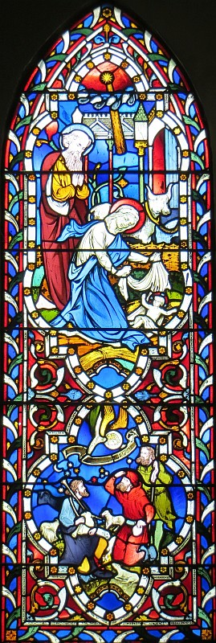

Et- il y'avait dans chu même pays des bèrgers tchi couochaient ès clios gardant lus bèrcas duthant l's heuthes dé la niet.
Et tout à co un ange du Bouôn Dgieu geuthit, et la glouaithe du Seigneur brilyit tout à l'entou d'ieux, et il' eûdrent un divèrs êffrai.
Et pis mais, l'ange lus dit: Né vouos êffritez pon; car jé vouos annonce eune grand' jouaie tchi s'sa pouor tout l'monde.
Ch'est qu' aniet, dans la ville dé Dâvi, lé Sauveur tch'est l'Christ, lé Seigneur, vouos est né.
Et nè v'chîn coumme tchi qu' ou l'èrconnaîtrez: ch'est qu' ou trouv'thez lé p'tit êfant fretté et enfliubé et couochi dans un cannichot.
Et pis tout d'un co il y'eut auve l'ange eune multitude dé l'armée céleste, louangeant l'Bouôn Dgieu et dîthant:
La glouaithe sait à Dgi au pus haut des cieux, la paix sus la tèrre et bouonne volanté envèrs les hommes.
Et auprès qué l's anges eûdrent dispathu d'auve ieux, dans l'ciel, les bèrgers s'entré-dîdrent: Filons jusqu'à Bethléem, et viyons chein tchi s'est arrivé, et qué l'Seigneur nouos a fait connâitre.
I' s'y'en allîdrent don dêliêment, et il' y trouvîdrent Mathie, et Joseph, et lé p'tit êfant tch'était couochi dans un cannichot.
Et l'ayant veu dé lus propres ièrs, i' fîdrent à saver à tous chein tch'avait 'té annoncé entouor chu p'tit avé.
Et touos les cheins tchi l's eûdrent ouïs en restaient êmèrvilyis, dé ch' qué les bèrgers lus dîthaient.
Et Mathie gardait toutes ches chôthes à lyi-même, en les r'pâssant dans san tchoeu.
Et les bèrgers s'en r'allîdrent, en glorifiant et en louangeant l'Bouôn Dgieu dé tout ch' tch'il' avaient ouï et veu, tout comme v'là tchi lus avait 'té dit.
Des bèrgers, dans l's envithons d'Béthléhem 'taient couochis la niet à garder lus brébis, quand un ange du Seigneu lus appathut et i' fûtent illeunminnés par eune grande lueu! Il' eûtent hardi peux, mais l'ange lus dit, "Né craingniz pas! J'apporte eune bouonne nouvelle pouor VOUS et pouor tout l'monde, car aniet, dans la Ville dé Dâvi, un Saûveux tch'est l'Christ cos est né! Allez! Et ou trouv'thez lé p'tit embonn'té et couochi dans eune crèche!"
Et l'ange auvec eune armée céleste chantîtent, "I' faut louer Dgieu! Glouaithe à Dgieu! Paix sus la Tèrre et beinveillance envèrs tous!" Et i' dispathûtent!
Les bèrgers lus mîntent en route, et sus lé c'mîn il' en pâlîtent à touos les gens en allant et v'nant et tous admithîtent chein qu'il' avaient veu et ouï du p'tit êfant à Béthléhem!
Mais Mathie, sa Méthe, gardit toutes ches patholes-là dans san tchoeu!
Joan Tapley

Et y'avait des gardeurs dé brébis tchi d'meuthaient hors dans les clios là-l'tou, tchi dgettaient lus troupieaux la niet. Un m'sagi du Seigneu geuthit l'avant à ieux et la glouaithe du Seigneu lit l'tou dg'ieux et i' fûdrent êffrités. Mais lé m'sagi lus dit, "N'séyiz pon êffrités. Ch'est en tchi j'vos apporte eune bouonne nouvelle tchi rêjouitha tout l'monde. Aniet dans la ville dé Dâvi un Saûveux vos a 'té né; ch'est l'Onguenné, l'Seigneu. Chennechîn vos sèrvitha d'mèr: ou trouv'thez un p'tit mousse fretté et couochi dans un tro."
D'un co toute eune trivelaine d'l'armée du ciel geuthîdrent acanté lé m'sagi, en louangeant l'Bouôn Dgieu et dîthant: "Glouaithe au Bouôn Dgieu dans l'pus haut ciel, et sus la tèrre d'la paix sus les cheins tchi sont préféthés."
Quand les m'sagièrs l's avaient laîssis et lus en 'taient allés au ciel, les gardeurs dé brébis lus entré-dîdrent, "Allons à Béthléhem vaie chein tchi s'est adonné qu'lé Seigneu nos a fait assaver."
I' lus arroutîdrent don et trouvîdrent Mathie et Joseph et lé p'tit mousse tchi 'tait couochi dans l'tro. Quand i' l'avaient veu, i' contepétîdrent chein tchi lus avait 'té dit entouor lé mousse, et touos les cheins tchi l'ouîdrent fûdrent êmèrvilyis par chein qu'les gardeurs dé brébis lus dîdrent.
Mais Mathie couoyit tout chennechîn dans l'esprit et l'reunminnit dans l'tchoeu.
Les gardeurs dé brébis lus en r'fûdrent en glorifiant et louangeant l'Bouôn Dgieu pouor tout chein qu'il' avaient veu et ouï, tchi 'tait à un picot coumme i' lus avait 'té conté.
Viyiz étout:
{kind=link}